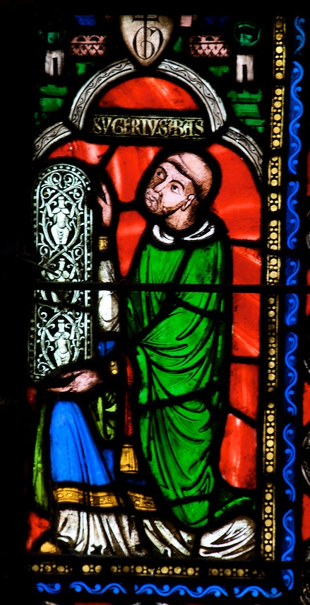

L'Architettura del Gotico Radiante
Nel cuore di Parigi, la Sainte-Chapelle rappresenta il punto d'arrivo dell'architettura gotica, trasformandosi in una "nave di cristallo" priva di pareti massicce.


La Luce Spaziale
La luce che inonda lo spazio sacro smaterializza la pietra, rifrangendosi sulle dorature delle colonne e sulle coperte stellate delle volte celesti.

L'Abate Suger e la Teologia della Lux Nova
Alla base di questa concezione dello spazio vi è l'eredità teorica dell'Abate Suger, il quale teorizzò che la luce colorata filtrata dal vetro fosse il mezzo per condurre il fedele verso la conoscenza divina.
